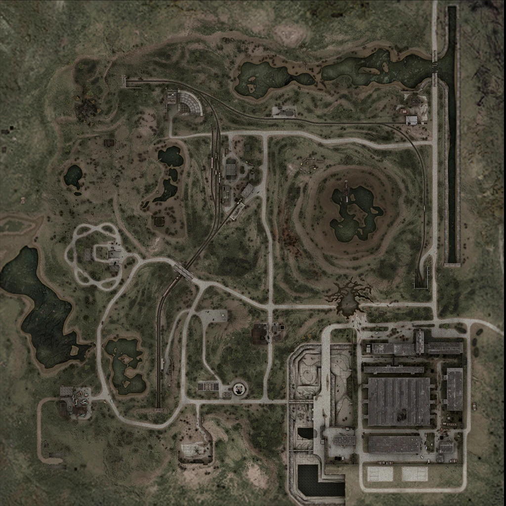

Окрестности «Юпитера» — окрестности бывшего завода радиотехнических материалов из «S.T.A.L.K.E.R.: Зов Припяти», включающие в себя ж-д станцию «Янов», сам завод и его близлежащие окрестности. В окрестностях «Юпитера» встречаются сталкеры, долговцы, свободовцы, бандиты, наёмники и монолитовцы. Также недалеко от «Янова» стоит бункер учёных. Ещё здесь находится очень радиоактивное село Копачи. Изредка на локации можно встретить псевдогиганта и химеру. Редкий гость этих земель — пси-собака. Её можно увидеть лишь два раза: первый раз — в «Оазисе», после срывания с ветки артефакта «Сердце Оазиса», и второй — на территории завода «Юпитер». Точка эвакуации Б205 (на ЗРК «Волхов»).
музыка
день
ночь
Карта
Станция «Янов». Один из основных объектов локации и центр сталкерской жизни в этих местах — старая железнодорожная станция. Самое безопасное место в округе, место сбора всех сталкеров после рейдов, а также во время подготовки к ним. Здесь есть бар, которым заправляет Гаваец, мастерская механика Азота, а также медпункт Костоправа. Станция поделена на две части, в одной из которых хозяйствует «Долг» во главе с Шульгой, а в другой — «Свобода» под руководством Локи. На самой станции, объявленной нейтральной территорией, обе группировки кое-как уживаются друг с другом, однако на открытой местности часто случаются столкновения между бойцами обеих группировок. Бандитов сюда не пускают, так как их не переваривают ни сталкеры, ни долговцы, ни свободовцы.
Собственно в честь него локация и получила свое название. Фактически является заводом радиоматериалов, однако, как становится известно в ходе игры, завод занимался и секретными проектами. В «S.T.A.L.K.E.R. Зов Припяти» упоминается, что после первой аварии на ЧАЭС там изготавливалось «Изделие № 62». Завод На территории «Юпитера» находится один из упавших вертолетов, принимавших участие в операции «Фарватер», а также спуск в подземный путепровод «Припять-1». На территории завода обитает достаточно большая стая слепых собак. Сталкеры, промышляющие в окрестностях, предпочитают не заходить на территорию завода, так как боятся, что в темных корпусах «Юпитера» их настигнет неизбежная смерть. В отличие от конечного варианта, в ранней версии для ЗП склад контейнеров находился на севере локации, на месте карьера не было карьера как такового, там располагались болота. Охладительный канал был на юге локации. Также отсутствовали многие объекты из релиза.
Cтарая градирня, при подходе к которой по рации начинают слышаться зацикленные просьбы о помощи. Разгадка тайны этого сигнала о спасении является одним из квестов «Зова Припяти», в результате чего игрок узнает, что радиосообщение записано отрядом «долговцев», попавших в «пространственный пузырь». Ликвидировать пузырь можно лишь имея детектор «Сварог», который нужно активировать при подходе к градирне. В результате из деактивированной аномалии выпадут тела долговцев, в том числе и тело генерала Таченко, легендарного основателя «Долга», на котором можно найти его ПДА, содержащий дневник с диктофонной записью последних слов генерала.
Аномалия-болото, в которой есть кислотные очаги. В самой аномалии обитают кровососы, точнее их болотный подвид со шкурой белого цвета. Квест на уничтожение кровососов может дать охотник Зверобой на станции «Янов». Также здесь есть мутировавшее дерево, вероятно, являющееся неким слабым подобием известного «Соснодуба».
Некогда цементный завод, прекративший работать по профилю ещё до аварии на ЧАЭС, начав выпускать радиодетали. Квест на поиск радиодеталей дает механик и радиолюбитель Азот с «Янова», который за нахождение всего, что нужно, сделает скидку на свои услуги. На момент действия «Зова Припяти» сам завод является временным опорным пунктом «Свободы», «Сталкеров» и «Долга», зачастую зомби и реже бандитов.
Мобильная лаборатория. После долгих бюрократических проволочек профессорам Герману и Озёрскому удалось добиться разрешения на экспедицию. Детали были спущены с вертолёта, сборкой занимались военные. Первым среди сталкеров свои слуги учёным предложил Гарик, который, подписав контракт, суляющий ему официальный пропуск через Кордон, занимался поиском артефактов, но не мог нигде найти «Ломоть мяса» и «Колобок». Дегтярёв, желая занять место Гарика (в плане поиска артефактов для лаборатории), принёс ему их, тогда тот покинул бункер и рванул в Припять. Несколько позже Гарика к учёным присоединилась группа Тополя, занимавшаяся замерами в аномалиях. Так же к обитателям бункера присоединился бывший техник «Чистого Неба» — Новиков. После них группа наёмников под командованием Черепа взялась охранять бункер, но это был предлог, целью наёмников было не допустить попадания в руки учёных данных из «Х»-лабораторий.
Заброшенный зенитно-ракетный комплекс, точка эвакуации Б205. Там обитают около десятка зомбированных, стая тушканов и бюрер. Место выполнения квеста «Места эвакуации». Также здесь расположен склад с оружием.
Скопление «жарок». Заскриптован артефакт «Глаз».
На заброшеном складе разместилась банда Шишака . Здесь же находится пленный Митяй.
КПП — контрольно-пропускной пункт на территорию «Юпитера». Пристанище бандитов. Место выполнения квеста «Долги».
Разрушенная деревенька, кишит зомбированными. Хоть зомби очень много ,но здесь они гораздо более дружелюбны и не атакуют игрока если не нападать на них и подходить очень близко. Место выполнения квеста «Копачи».
В прошлом — стоянка для техники. Да и сейчас на ней осталось пару машин. Ничего примечательного в ней нет, да только место это облюбовали зомбированные. Заскриптован артефакт «Лунный свет».
Упавший беспилотный летательный разведывательный аппарат неизвестной модели. Был ошибочно принят всеми сталкерами, среди которых, даже был один бывший лётчик, за НЛО. Аппарат находящийся в северо-западном углу локации, неподалеку от аномалии «Пепелище». Из него можно извлечь модуль памяти, который требуется разблокировать. После выполнения необходимых манипуляций у механиков Новикова или Азота, можно получить координаты трех тайников группы Стрелка, которые он как-то запеленговал. Тайники содержат записки с различной информацией. Их можно продать Сычу, или вернуть Стрелку в Припяти.
Большой карьер с болотом на дне. Здесь располагается одна из местных достопримечательностей — гигантский роторный экскаватор, предположительно ЭРШРД-5000. Данный экскаватор изначально должен был быть элементом локации «Подземелье Припяти» в «Чистом Небе», однако он исчез из игры вместе с локацией, вырезанной разработчиками в процессе разработки, но все же был возвращен в «Зове Припяти». Сами подземелья переродились в путепровод «Припять-1» Здесь же располагается один из тайников группы Стрелка с запиской. В воде вокруг экскаватора частенько встречаются кислотные пятна, так что передвигаться нужно довольно аккуратно. С карьером также связан один из побочных квестов игры по разоблачению Флинта. Лежащий в кислотной анамалии умирающий сталкер Щепка позволил Дегтяреву пролить свет на личность Флинта.
Этот заброшенный комплекс расположен на локации окрестности завода «Юпитер». Судя по всему, был предназначен для обслуживания путепровода «Припять-1», расположенного неподалеку. Комплекс имеет несколько выходов на поверхность — один на холме, возле вертолетной площадки с куполообразной конструкцией наверху, а второй — возле перрона, который находится у подножия холма. Выходы связаны между собой сложной системой вентиляционных ходов и труб. В комплекс возможно проникнуть по трубам вентиляции, но надо быть осторожными — заброшенное здание облюбовали зомби и тушканы. Из аномалий присутствует «Оазис» и хитрая аномалия-телепорт. Непосредственно с самим комплексом связан квест на поиск артефакта «Сердца Оазиса».
Старый полустанок. Место выполнения квеста «Кража».
Тоннель на юго-востоке локации. Место обитания двух бюреров, которых нужно убить во время выполнения квеста «Охота».
Место падения вертолета «Скат-1», участвовавшего в операции «Фарватер». Подходы к площадкам заминированы.
В данной локации присутствуют все группировки ЗП. Из разговоров со сталкерами можно узнать, что локация находится где-то между Припятью и Радаром. Здесь находятся все три тайника Стрелка. На карте есть неотмеченный склад «Долга». Игрок попадает туда после получения квеста от подполковника Шульги или Локи (для этого надо отдать одному из них КПК Моргана). На востоке локации можно увидеть окрестности Припяти. Завод Юпитер является реальным объектом ЧЗО, но в реальности он расположен гораздо ближе к Припяти. В английской версии локация называется «Yanov» («Янов»). В ресурсах ЧН можно найти карту ранней версии локации. Окрестности «Юпитера» не планировались в ЧН, однако карта попала в файлы игры случайно из-за того, что следующая часть игры начинала разрабатываться параллельно с «полированием» приквела. На этой карте видно, что завод «Юпитер» был наклонён на 90 градусов вправо, склад контейнеров перемещён в левую нижнюю часть (озеро возле него осталось), охладительный канал, плавни и параллельная каналу дорога остались. Если прислушаться к фоновым звукам на данной локации, то можно услышать звуки движения поезда.

@все права защищены 2025г